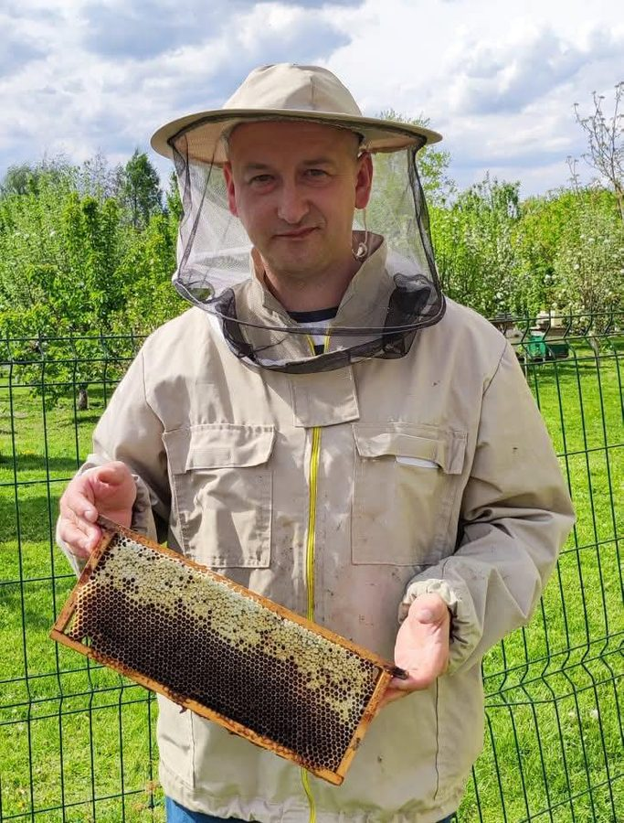

Nasza historia
Z natury,
Z natury,
dla natury
Pasieka Dobra Pszczoła to rodzinna pasja Małgorzaty i Rafała Zacharskich, prowadzona w Małyszynie Dolnym 20 (gmina Mirzec, woj. świętokrzyskie).
Nasza pasieka leży w północno-wschodniej części średniowiecznej Puszczy Świętokrzyskiej, zwanej Puszczą Iłżecką, na granicy obszaru Natura 2000. Ten wyjątkowy ekosystem sprawia, że nasze miody i produkty pszczele cechują się najwyższą jakością.
Pszczoły zbierają nektar, pyłek, propolis i spadź wyłącznie z roślin naturalnego, niezmienionego od wieków środowiska. Stąd niepowtarzalny smak i aromat każdego naszego miodu.
- Pasieka wędrowna – różne pożytki, bogata oferta miodów
- Rolniczy Handel Detaliczny – kupujesz bezpośrednio od rodziny
- Nadzorowana przez Państwową Inspekcję Weterynaryjną
- Specjalistyczny sprzęt pszczelarski najwyższej klasy
- Syn Mikołaj – kontynuator rodzinnej tradycji
